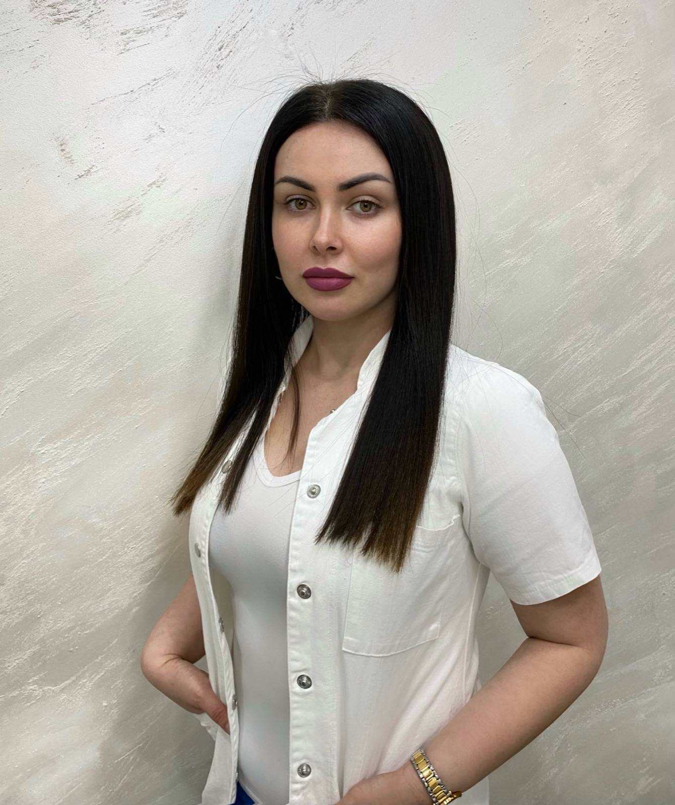
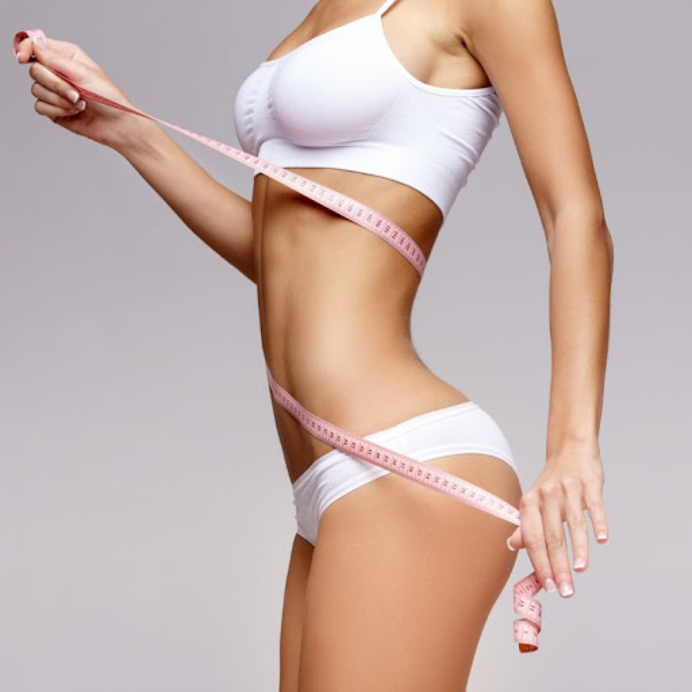
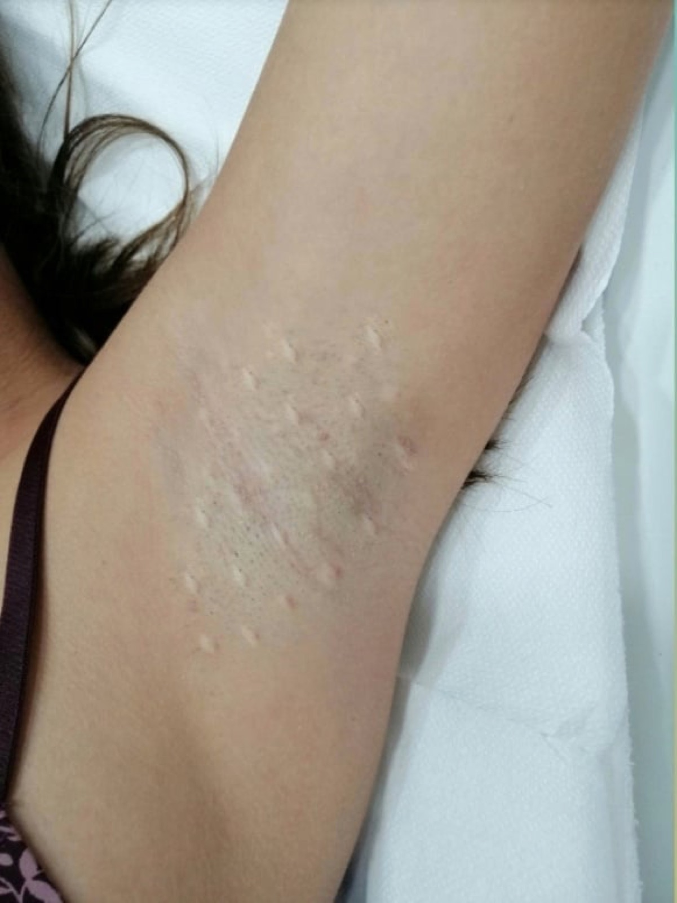
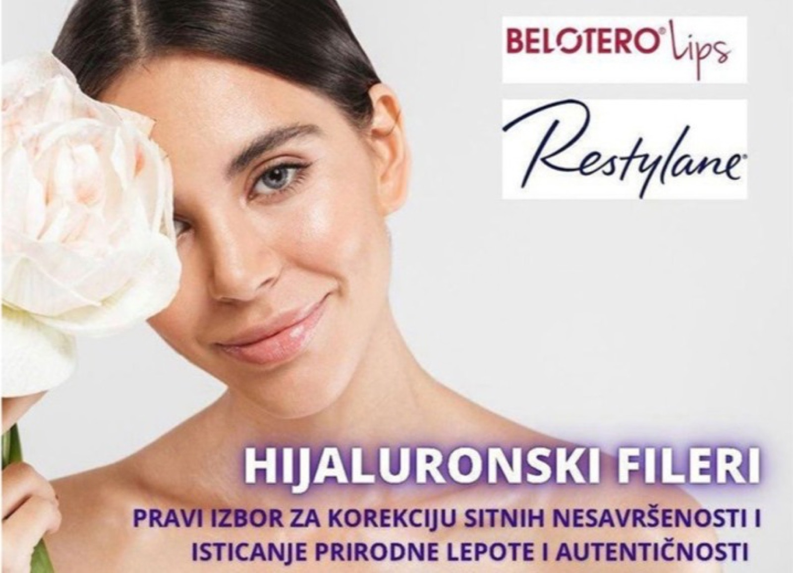
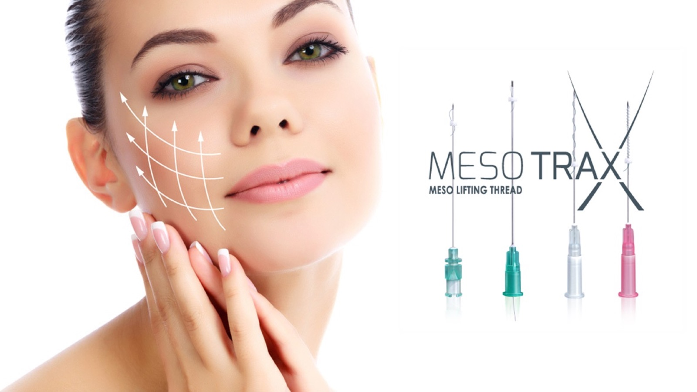
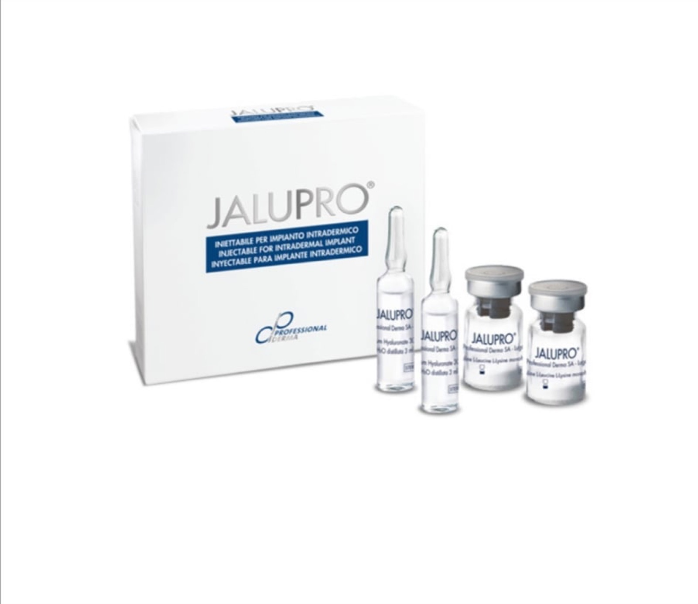
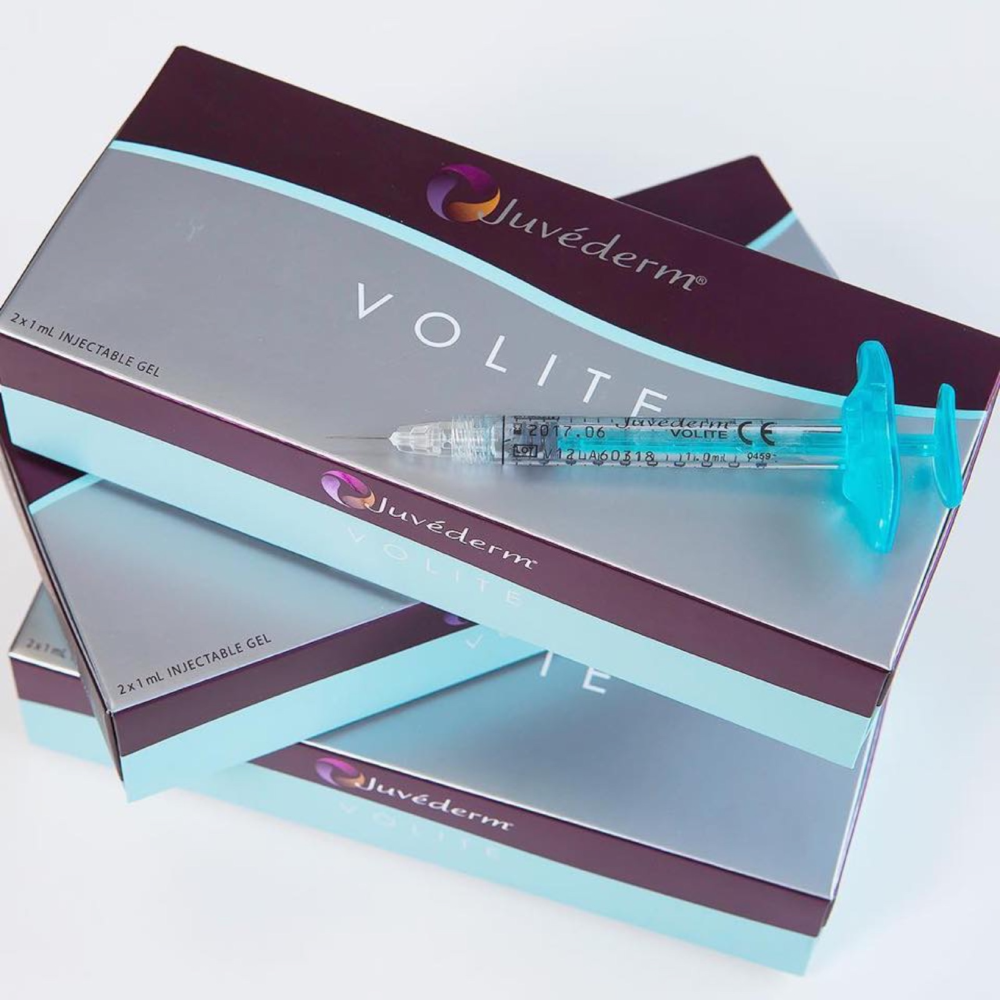
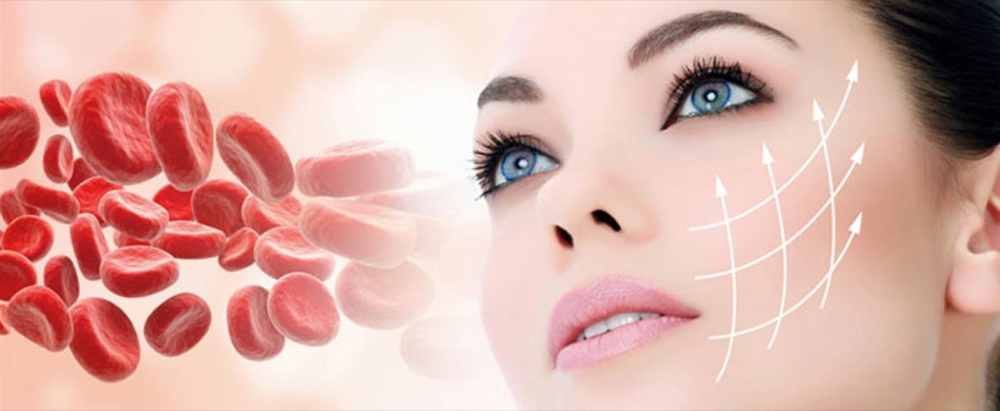

Poliklinika PekićBeograd & Novi Sad
Umetnost prirodne lepote.
iskustva

Ne menjamo vas — otkrivamo vašu najlepšu verziju.
Nakon završenog medicinskog fakulteta i odrađenog staža, upisuje specijalizaciju iz plastične i rekonstruktivne hirurgije na Klinici za plastičnu hirurgiju Kliničkog centra Srbije, koju uspešno završava u aprilu 2026. godine i stiče zvanje specijaliste.
Iza nje je više od 10 godina rada sa hijaluronskim filerima, botoksom, mezoterapijom, mezonitima, tretmanima krvnom plazmom i hemijskim pilinzima — uz stalno usavršavanje kod domaćih i inostranih stručnjaka.
- /01 Specijalista plastične, rekonstruktivne i estetske hirurgije
- /02 10+ godina iskustva u estetskoj medicini
- /03 Član Regionalne lekarske komore Beograd
- /04 Član Udruženja za plastičnu, rekonstruktivnu i estetsku hirurgiju Srbije
Estetika bez preteranosti. Verujemo u suptilne korekcije koje poštuju vaše crte lica — prirodno, bezbedno i potpuno vaše.
— dr Gorica Rogan OpačićVaša lepota
je naša briga
- 01
Hijaluronski fileri
Lice & usneBrzo, bezbedno i bezbolno rešenje za veliki broj nepravilnosti na licu.
- 02
Mezoterapija
Sjaj kožeNeka vaša koža zablista mladalačkim sjajem.
- 03
Biorevitalizacija
HidratacijaVrhunska hidratacija i podmlađivanje kože.
- 04
Mezoniti
ZatezanjeNajjača stimulacija kolagena za zategnutu, čvršću kožu.
- 05
„Vampirski" tretman
Krvna plazmaTretman holivudskih zvezda — snaga vaše sopstvene plazme.
- 06
Korekcija bora
MimikaGornja trećina lica — čelo, između obrva i oko očiju, bez napetog izgleda.
- 07
Lipoliza
OblikovanjeGubite masne naslage tačno tamo gde želite.
- 08
Prekomerno znojenje
BotulinumNeprijatni tragovi na odeći postaju prošlost.
Prirodni rezultati.
Registrovani materijali · Individualni pristup
Momenti iz
ordinacije







Korekcija usana
već od 21.000 din
Prirodno punije i lepše oblikovane usne uz vrhunske hijaluronske filere — Belotero, Teosyal i Radiant. Individualan pristup proporcijama vašeg lica.
Rezervišite ponuduTransparentne cene
- Konsultacija3.000
- Botoks — 1 regija16.000
- Botoks — 2 regije22.000
- Botoks — 3 regije28.000
- Botoks brade7.000
- Botoks masetera30.000
- Botoks vrata30.000
- Hiperhidroza (prekomerno znojenje)35.000–40.000
- Belotero 1 ml28.000
- Teosyal (RHA3) 1 ml28.000
- Teosyal (RHA Kiss) 0,7 mlusne21.000
- Radiant 1 ml23.500
- Crystal18.000
- Aquashine21.000
- Long Lasting (LOLA)25.000
- PRP („vampirski" tretman)21.000
* Sve cene su u dinarima (RSD). Konačan plan i cena tretmana definišu se na konsultaciji, prema individualnim potrebama.
Odgovori pre
vašeg tretmana
Da li usne korigovati hijaluronom ili trajnim materijalima?
Usne, kao i ostale regije lica, koriguju se isključivo hijaluronskim filerima — potpuno prirodnim, bezbednim i registrovanim. Veštačke, trajne materijale prate komplikacije i zabranjeni su u estetske svrhe.
Da li su tretmani bolni?
Nisu. Pre tretmana nanosi se topikalna anestezija, a i sami fileri u sastavu sadrže određeni procenat lidokaina. Intervencije su tek blago neprijatne.
Da li mi je 1 ml filera dovoljan?
Zavisi od željenog rezultata. Za osveženje i blago uvećanje usana 1 ml je sasvim dovoljan; za veće volumene ili druge korekcije potrebna je veća količina.
Koji filer je najbolji?
Svi registrovani fileri su kvalitetni i zadovoljavaju stroge standarde. U radu koristimo proverene, registrovane filere — Belotero, Teosyal i Radiant.
Kada je pravo vreme da počnem sa tretmanima?
Zavisi od stanja kože, na koje utiču ishrana, genetika i svakodnevna nega. Preporuka je započeti sa prvim znacima starenja.
Lepi i zadovoljni sobom.
Zakažite
svoju konsultaciju
Ostavite poruku ili nas pozovite — javljamo se u najkraćem roku i pronalazimo termin koji vam odgovara.
- Telefon063 / 8372533065 / 8040850
- Mejlgorica.rogan@gmail.com
- AdresaBeograd — Bulevar Zorana Đinđića 123g
Novi Sad — Grčkoškolska 3 - Radno vremePon–Pet 09–20 · Sub 09–15 · Ned zatvoreno